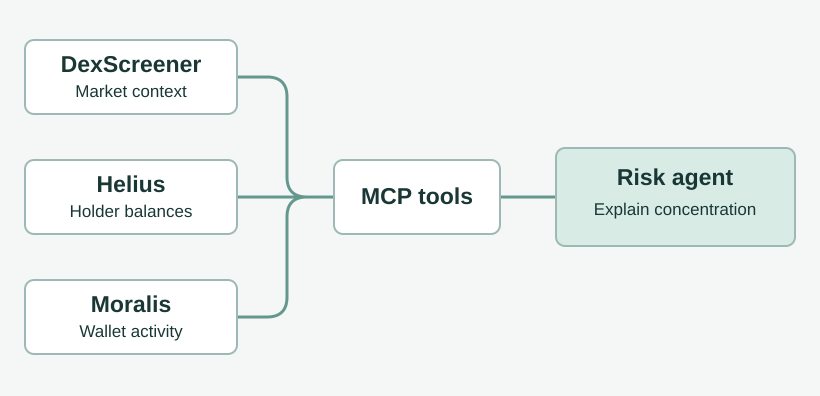

Crypto Risk Analysis Agent
An agent that connects wallet activity and token ownership data to explain concentration risk.
The question
A wallet holding a large share of a token could be an exchange, a liquidity pool or a single investor. Those cases look similar in a holder table. The team set out to give readers enough context to interpret a concentration signal.


My contribution
I worked on the tool-calling agent that turns structured API responses into explanations. Yuvraj Gupta, Pramod Thebe, Ryuto Kawabata and I submitted the system together.
Following the evidence
Helius supplies holder balances, Moralis adds wallet activity, and DexScreener provides market context. A custom MCP server exposes these lookups to the agent. The backend coordinates requests and the interface presents the report.
Working within API limits
Holder lookups can trigger provider rate limits. The team documented spacing requests, retrying failed calls and degrading gracefully when a source is unavailable. A missing response reduces the evidence available for a report.
Outcome
Our team earned first place for Best Use of TRM Labs and third place for Best Use of Sanity at the Production Agents Hackathon. The prototype explains observed risk signals. Concentrated ownership alone cannot establish intent or predict what a token will do.